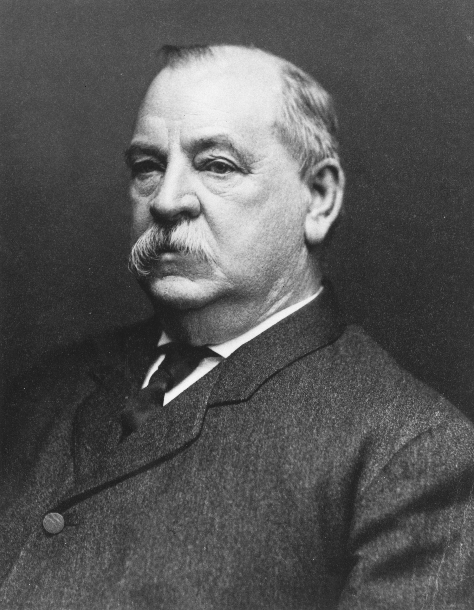
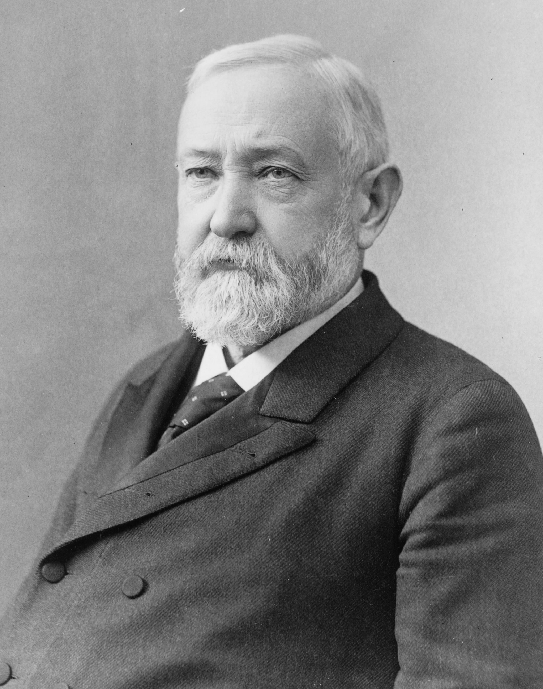

Home
White House
1789s-1800s
1800s-1850s
1850s-1900s
1900s-1950s
1950s-2000s
2000s-Today
The 1850s to the 1900s
Millard Fillmore
- Him and his wife Abigail started the first permanent
White House Libary
- Thought himself how to read
- Became President after the previous one died
Franklin Pierce
- The first president to promise his oath of office and not swearing it
- First president to put a Chrismas tree in the White House
- Was the only president to keep his entire cabinet for his term
James Buchanan
- Is the only president to have never married
- He had been engaged to Anne C. Coleman
- They have been many speculation on his sexuality
Abraham Lincoln

- Was a skilled wrestler and only lost one match out of 300 and was enachted into the National Wrestling Hall of Fame
- The tallest president standing at 6 feet 4 inches
- Is the only president to have a patent
Andrew Johnson

- Escaped Indentured Servitude
- Is the only Southerner to have
kept his seat in Congress upon sucession
- Was the first president impeached
Ulysses S. Grant
- His original first name wasn't Ulysses that was his middle name and his original first name was Hiram
- The S in his name stand for nothing
- Was known for being a drunk but this didn't seem to have affected his ablities during the Civil War and he seems to have never made any major decisions while drunk
Rutherford B. Hayes

- Did not serve alcohol in the White House
- Held the first Easter Egg Roll at the Whihe House
- Is loved and celebrated in the Paraguay. Having many statures in the country. Due to his mediation of Paraguay and Argentina for a border dispute giving the majority of land Paraguay owns currently
James A. Garfield

- The first left-handed president
- Could also write in two languanges at the same time on the left he could write in greek and on the right latin
- Was known as the Preacher President due to his public speaking ablities
Chester A. Arthur
- Nicknamed Elegant Arthur due to his likeness of being fashionable and changing his clothes thoughout the day
- He had 80 pairs of pants
- There was rumors that he was Canadian.
This is NOT true
Grover Cleveland

- Is the only president to serve terms seperate to each other
- Had a nickname of Big Steve since he was 275lbs
- Is the only president to be married at the White House
Benjamin Harrison

- Is the grandson of William Henry Harrison
- First President to have electricty at the White House
- Some him nicknamed the Human Iceberg due to his personality
William McKinley
- First President to have rode in a automobile
- Had a pet parrot named Washington Post
- Rode in an ambulence after being shot